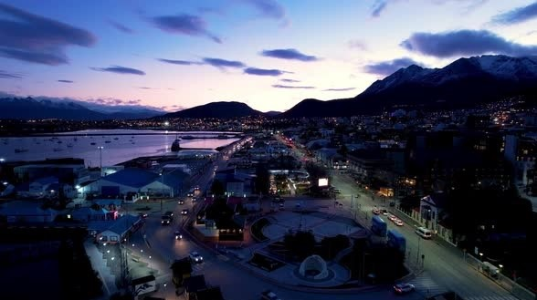
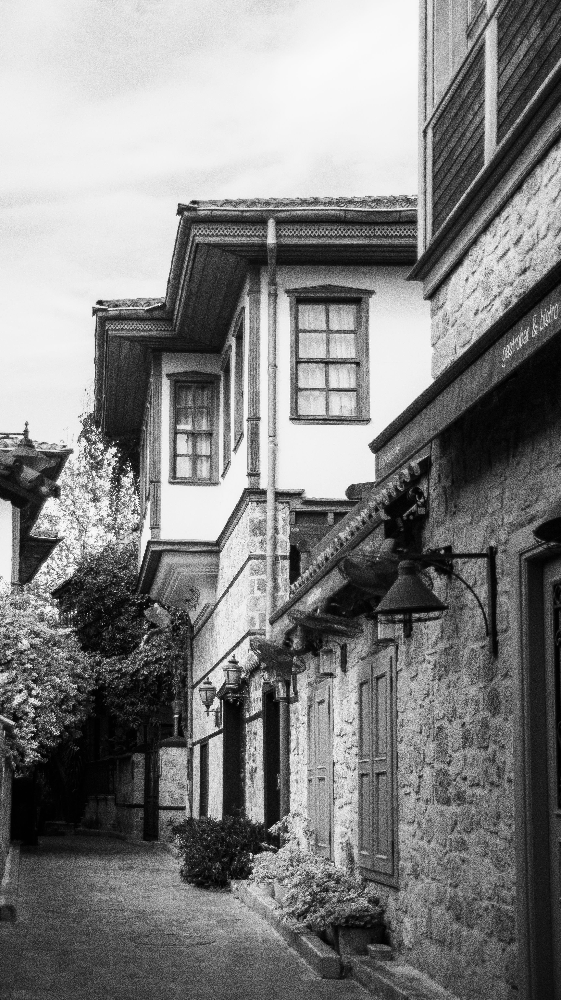
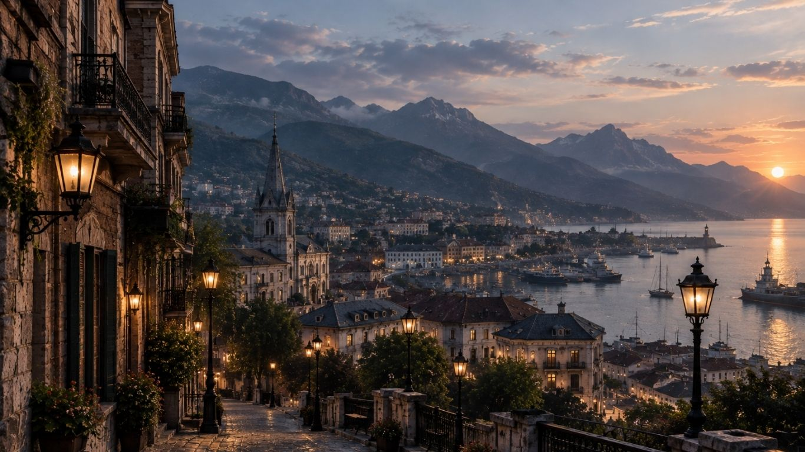
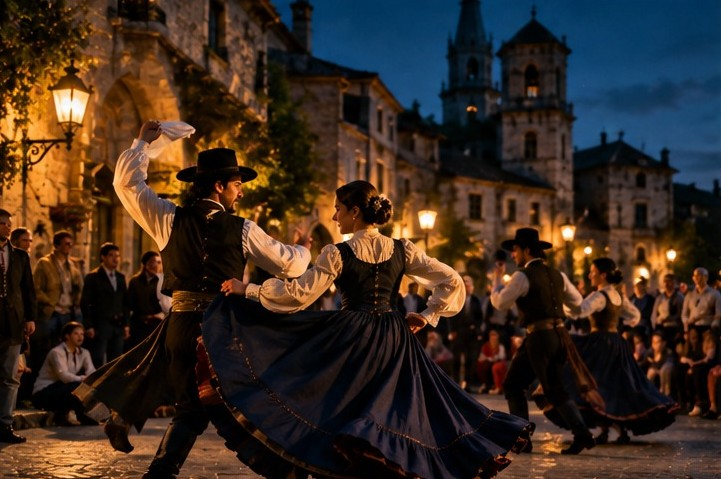
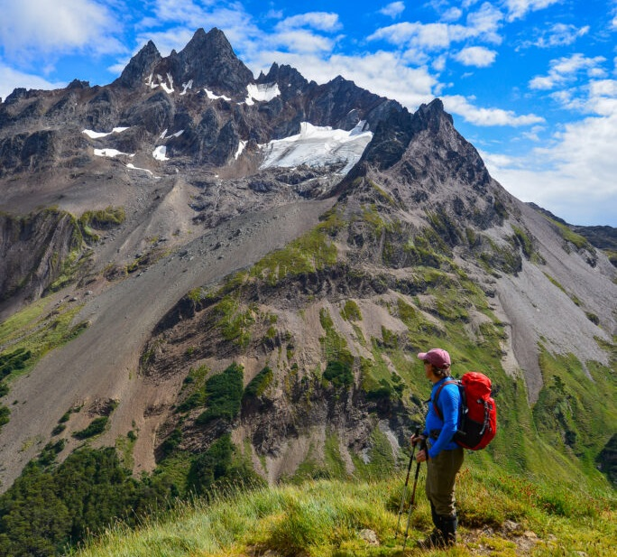

Bienvenido a Ciudad Margarita.
Una ciudad costera rodeada de montañas y envuelta en misterios, llena de historia, cultura y lugares turísticos que hacen de ella un destino único. Descubre todo lo que esta maravillosa y enigmática ciudad tiene para ofrecer.

La Ciudad


Ciudad Margarita es una ciudad costera rodeada de montañas, reconocida por su patrimonio histórico, sus barrios tradicionales y una cultura marcada por antiguas leyendas. Conoce su historia, cultura y tradiciones en los principales atractivos de la ciudad.
- El Pueblo de Arkham
- Museo de Dunwich
- Puerto de Innsmouth
Conoce la Ciudad
Dónde Ir
Descubrí los lugares más emblemáticos de Ciudad Margarita, donde la historia, la naturaleza y las leyendas se encuentran.
Recorré el Pueblo de Arkham, explorá los misterios del Museo de Dunwich, conocé el Puerto de Innsmouth y disfrutá de las vistas del Faro de Ragnar.

- Pueblo de Arkham y la Danza de Erich Zann
- Museo de Dunwich y sus Noches de Astronomía y Letras
- Puerto de Innsmouth y el Festival del Mar
- Faro de Ragnar y sus leyendas
Ver Lugares turísticos
Actividades
Ciudad Margarita también invita a disfrutar de la naturaleza y la aventura. En los alrededores del Monte Mailen, los visitantes pueden recorrer senderos, realizar cabalgatas y descubrir paisajes de montañas, bosques y lagunas.
Además, el Canal Mailen ofrece excursiones de navegación, paseos por la Isla M y actividades acuáticas como kayak y canoas.

- Trekking por el Monte Mailen
- Cabalgatas por los bosques
- Navegación y caminatas por la Isla M
- Kayak y canoas
Contacto
Encuentra toda la información de contacto para poder comunicarte y planificar tu visita.
Ver información de contacto